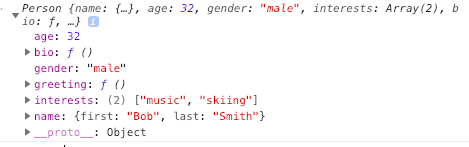
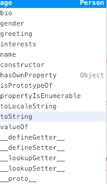

JavaScript的原型继承与原型链
Prototyes，原型，是 JavaScript 中一个对象从另外一个对象继承特性的方法。本文中来解释 原型链是怎么样工作的，还介绍一下怎么样对已存的构造器通过原型属性来添加方法。ES2015 添加了一个 class 关键词，但其实也是使用的基于原型来实现的类机制。
基于原型的语言？
JavaScript 经常被描述为基于原型的语言 ————为了提供继承，对象可以有一个 原型对象，可以从这个原型对象继承方法和属性。原型对象也可能拥有一个原型对象。就可以被称做一个原型链了，这就解释了为什么某个对象可以拥有在其他对象内定义的属性和方法。几乎所有对象都是 Object 的一个实例。
更准确一点，一个对象的属性和方法是在对象的构造方法上的prototype属性定义的，而不是在对象实例自身。
在 JavaScript 中，在对象实例和其原型（proto属性，此属性从构造器的 prototype 属性衍生）间有一个链接，那么通过遍历对象的原型链就能获取所有的属性和方法了。
注意：要理解在对象的原型（通过
Object.getPrototypeOf(obj)获取，或通过已经过时的 proto属性）和构造函数的 prototype 属性的区别。proto 是每个实例的属性，后面一个是构造器的属性。这也就是说：Object.getPrototypeOf(new Foobar())和Foobar.prototype引用同样一个对象。
理解原型对象
定义一个构造函数：
function Person(first, last, age, gender, interests) { |
用此构造函数构造实例：
var person1 = new Person('Bob', 'Smith', 32, 'male', ['music', 'skiing']); |
在我们的 Chrome ，打开 Developer Tools ，进入 console 。执行上面的代码后，前敲入 ： person1。你会看到如下结果：

但如果我们输入 person1. 的话，我们会看到更多的提示内容：

这提示了更多的属性和方法。比如 watch, valueOf 等。这些不是由 Person() 定义的，而是由 Object 对象定义的。
当我们调用类似 person1.valueOf 的时候发生了什么：？
- JS 引擎会检查 person1 及其构造函数 Person() 是否有这么一个 valueOf() 方法。
- 如果都没有，检查 Person() 构造函数的原型对象（这里是 Object ，且有一个 valueOf 方法），然后进行执行。
在这里，方法和属性不会从一个对象复制到另外一个，而只是通过原型链来访问。
没有一个官方的，用来直接访问对象原型对象方式。根据 ECMAScript 的规范，我们把他叫做 [[prototype]]。现代浏览器很多都有一个 proto 参数来包含构造器的原型对象。自 ECMA2015 可以通过 Object.getPrototypeOf(obj) 来获取原型。
prototype :定义继承属性的地方
Object 对象有很多的属性和方法，但是我们的 person1 继承来的不多，这是为什么？
上面提到，我们继承的属性，是原型对象定义在 prototype 属性内的。也就是说以 Object.prototype 开头，而不是 Object. 开头的属性。 prototype 属性的值是一个对象，用来存放我们希望可以被其他对象继承的属性和方法。
这听起来可能有点奇怪，怎么样在一个构造器内定义函数？事实上，函数也是一个对象，不相信的话可以查看 Function()
我们可以检查我们现在对象的 prototype 属性来看看。
Person.prototype |
Object.prototype |
我们会发现一个问题，就是对于构造器函数 Person()，其 prototype 属性包含一个属性:constructor，其值就是构造函数本身。所以定义在构造函数内的所有属性，都能被构造出来的对象继承。
回顾 create()
我们通过另外一种方式来实例化对象：
|
create() 做的事情就是从一个原型对象建立一个新对象。在这里，person2 使用 person1 作为原型对象。我们可以证明，确实是这样：
person2.__proto__ |
这似乎和 person1.proto 有所不同：
person1.__proto__ |
但其实也表明了， person1 是通过 构造器函数建立的，而 person2 是通过对象建立的。
constructor 属性
每个实例对象都从原型中继承了一个constructor属性，该属性指向了用于构造此实例对象的构造函数。
person1.constructor |
返回的都是 Person() 构造器。可以在 constructor 末尾添加 () 来调用构造器，构造一个新的实例。
var person3 = new person1.constructor('Karen', 'Stephenson', 26, 'female', ['playing drums', 'mountain climbing']); |
正常工作。通常你不会去用这种方法创建新的实例；但如果你刚好因为某些原因没有原始构造器的引用，那么这种方法就很有用了。
此外，constructor 属性还有其他用途。比如，想要获得某个对象实例的构造器的名字，可以这么用：
person1.constructor.name |
修改原型 prototype
我们为上面的构造器函数 Person() 添加一个新的方法：
Person.prototype.farewell = function() { |
接着我们调用这个方法看一下：
person1.farewell(); |
事实上，一种极其常见的对象定义模式是，在构造器（函数体）中定义属性、在 prototype 属性上定义方法。如此，构造器只包含属性定义，而方法则分装在不同的代码块，代码更具可读性。例如：
// 构造器及其属性定义 |
原文作者: Gowa2017 Zhang
原文链接: https://gowa2017.github.io/JavaScript/JavaScript的原型.html
版权声明: 转载请注明出处(必须保留作者署名及链接)